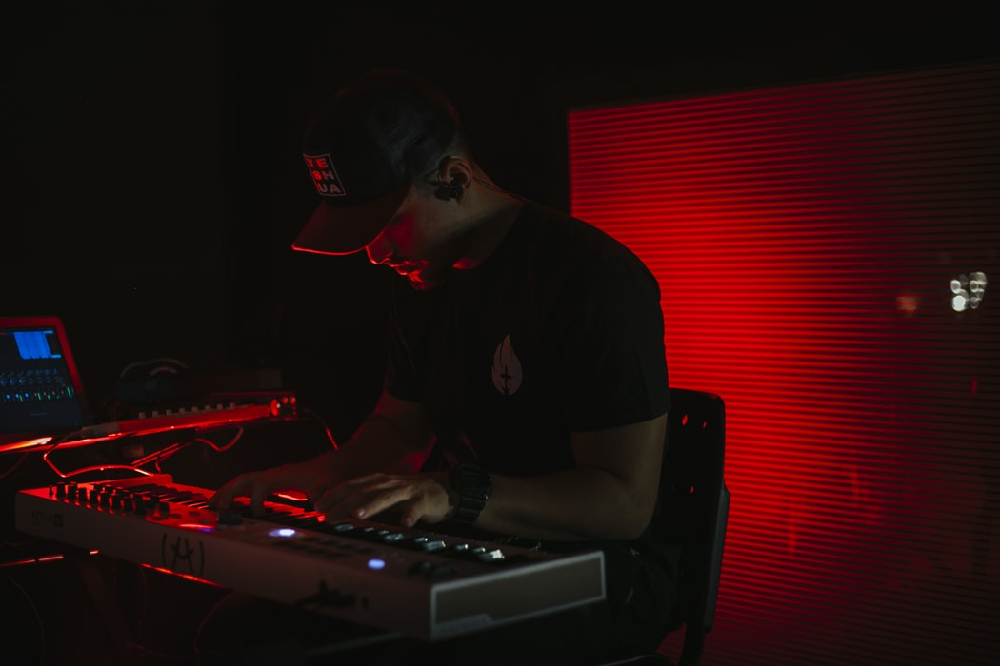

It was 2011 in a Galaxy not so far away, when two beings cut from the same cosmic cloth made an unspoken promise to explore the mysteries of the universe together.
Nihilists, romantics, artistic anarchists—they would plant a seed, or was it a mine? After which they’d climb up a cliff and watch the world as they knew it grow or explode. Perhaps both. And so a family project was born. Its mission: to introduce something disruptive and iridescent in the greyscale landscape of contemporary dance music. An interdisciplinary art project that would unite them in sound and image and create an invisible fortress around their world. Lens and barrier.
My Own Jupiter is a multimedia invitation onto the planet Edurne and Nicolas Lutz have created for themselves. It is the ticket onto the ship of imagination, the oxygen tank to better help us breathe in the glimmering fumes of a planet that we may not belong to—but are certainly welcome to explore.